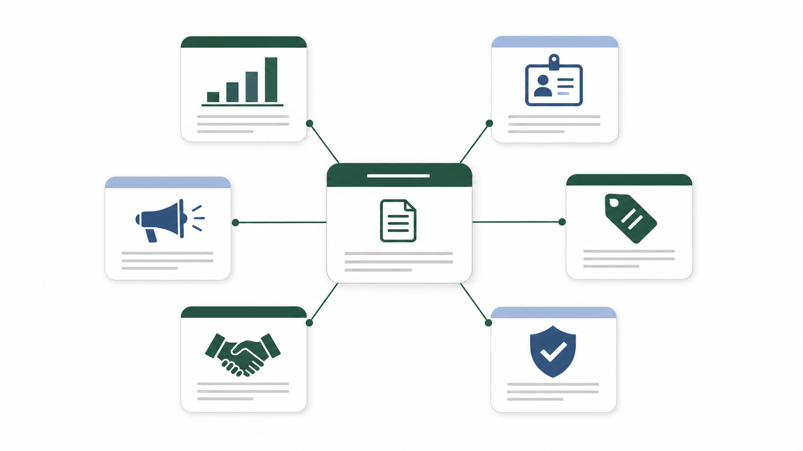
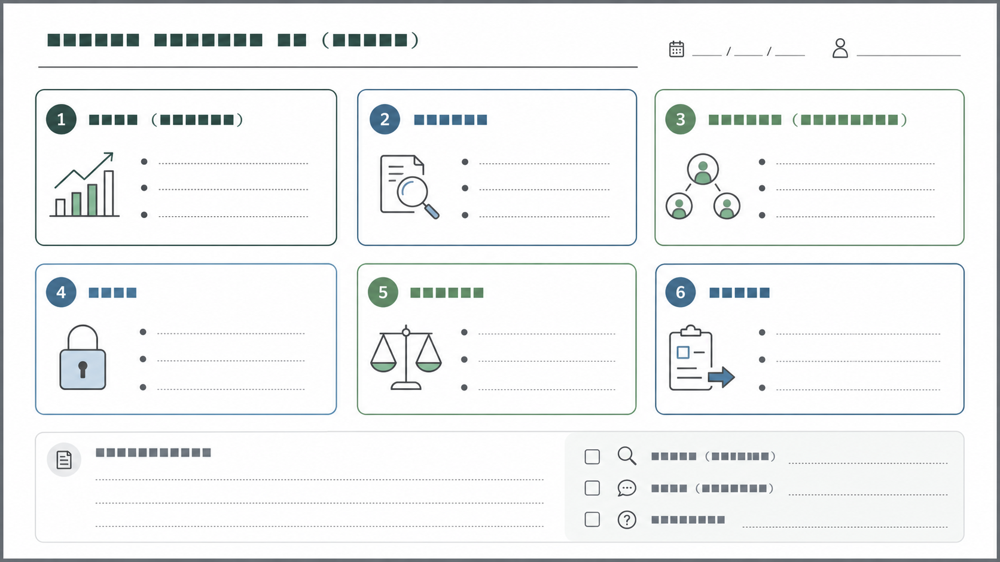

商談準備をAIで速くしたい、という相談は増えました。私自身も、調査の下準備はAIに助けてもらう場面が増えています。ただ現場でよく起きるのは、「AIに調べてと投げたら会社概要とニュース要約が出てきて終わる」か、「調べたつもりなのに提案仮説や質問設計に繋がらず当日の会話が浅くなる」かのどちらかです。
私はここを情報が足りないのではなく、見る順番がズレていることが多いと感じています。この記事では、商談準備で最初に見るべき顧客情報の優先順位と、AIの使いどころ（下準備）を、現場で回せる型にしてまとめます。

先に結論：会社概要より先に「意思決定の構造」と「今起きている変化」を見にいく
会社概要や沿革は大事です。ただ、商談準備の時間が限られているなら、私はまずここから見ます。
- 誰が、どういうプロセスで意思決定する会社か
- 今、何が変わっていて（変えたくて）、何がボトルネックか
- 相手が比較するとしたら、何を比較軸にしそうか
これが見えると質問が立ちます。質問が立つと、次アクションが設計できます。逆にニュース要約から入ると、情報は増えるのに会話が深くならないことが多いです。

「要約っぽい商談準備」になる瞬間（現場あるある）
あるある1：ニュース要約が綺麗すぎて、逆に何も言えない
AIに「この会社を調べて」と投げると、だいたい綺麗な文章が返ってきます。でも綺麗すぎて、次の一言が出ない。初回商談で「御社は◯◯領域で…」「直近は◯◯のニュースが…」の読み上げ感が出やすくなります。
「御社は◯◯領域で事業を展開されており…」
「直近は◯◯のニュースがあり…」
この入り自体が間違いではないのですが、相手が本当に聞きたいのは会社説明より「今日は何を一緒に決めるのか」になりがちです。
あるある2：情報収集はしたのに、質問が抽象のまま
準備メモを見ると情報はたくさんある。でも当日の質問が「何か課題はありますか？」「今後の方針ってどんな感じですか？」になってしまう。これだと相手の回答も抽象になり、会話がふわっとしたまま終わります。
商談準備のゴールを言語化する（ここがズレると全部ズレる）
私が商談準備で目標にしているのはこの3つです。
- 相手の意思決定が進む会話にする（会話の終点を作る）
- 相手の事実が取れる質問を持ち込む（仮説を検証する）
- 次アクションが自然に決まる状態にする（宿題を設計する）
商談準備の成果物は、綺麗な会社紹介文ではなく「当日、相手に聞くべき質問」と「会話のゴール」だと思っています。
商談準備で最初に見るべき顧客情報（おすすめの順番）
1) 変化の兆し（トリガー）
最初に見るのは「何かが変わっている兆し」です。変化がない会社に、今すぐ買う理由は生まれにくい。プレスリリース、採用ページ、IR、公式ブログ、登壇資料などに変化は出やすいです。
2) 何を成果とするか（評価指標）
次に「何が成果なのか」を仮置きします。受注率なのか、商談化率なのか、前工程の安定なのか。数字が分からなくても評価軸の仮置きはできます。評価軸が仮で置けると質問が具体になります。
3) 意思決定の形（誰が巻き込まれるか）
商談準備で一番効くのはここだと思っています。利用者、決裁者、実装/運用（情シス、セキュリティ、法務など）。この3者の論点はズレるので、誰にどう刺すかを先に設計します。
4) 現状のやり方（代替手段）
相手は必ず今も何かしらで回しています。Excel、既存SaaS、人の経験、外部委託。現状の回し方が分かると提案の粒度が上がります。
5) 制約（やりたくてもできない理由）
制約は反論ではなく設計条件です。外部送信、審査、部門間合意、既存契約、現場の忙しさ。制約が見えると「どう運用に落とすか」の相談になり、商談が議論になりやすいです。
なぜ会社概要要約だと弱いのか（買い手側の変化）
買い手は営業担当者に会う前に検討を進めています。Gartnerの発表でも、買い手が営業担当者なしの購買体験を好む傾向が示されています。
参考: https://www.gartner.com/en/newsroom/press-releases/2025-06-25-gartner-sales-survey-finds-61-percent-of-b2b-buyers-prefer-a-rep-free-buying-experience
この前提だと初回商談は会社概要の説明では価値が出にくい。相手が欲しいのは課題の切り分け、比較軸、意思決定の道筋になりやすい。だから準備でも、会社概要より先に意思決定の構造と変化に当たりにいく方が会話が進みます。
一次情報はどこを見る？（おすすめの“6箱”）
商談準備の材料を集めるとき、私はソースを6箱に分けます。AIで集めるときも「この箱ごとにURLを集めて」と投げると、要約より実務に使えます。

- IR/決算資料（上場なら強い）
- 採用/求人（現場課題が出やすい）
- プレスリリース（方針と変化の入口）
- 製品ページ/料金/規約（条件と制約の当たり）
- 導入事例（比較軸の仮置き）
- セキュリティ/データ取扱い（後で詰まらないため）
AIの使いどころ：出力を信じるのではなく「材料を揃える」ために使う
生成AIは便利ですが、もっともらしい誤情報を出しうる性質があります。だから私は、AIに任せるのは基本「下準備」までにしています。
参考: NIST Generative AI Profile（NIST AI 600-1, PDF）: https://nvlpubs.nist.gov/nistpubs/ai/NIST.AI.600-1.pdf
- URLのリストアップ（一次情報の箱ごとに集める）
- 長い資料の該当箇所の抜き出し（引用できる形でメモ化）
- 論点の分類（変化/指標/意思決定/制約）をたたき台化する
結論（この会社はこうだ）は人が置く。この分担にしておくと、AIを使っても事故りにくいです。
10分で回す商談準備チェックリスト（時間がない日の最低ライン）

- 直近の変化（トリガー）候補は何か
- その変化により起きそうな困りごとは何か
- 成果指標（何が良くなったら勝ちか）は何か
- 意思決定に巻き込まれそうな部門はどこか
- 現状の代替手段は何か（人/Excel/既存SaaS）
- 制約（外部送信/審査/契約/体制）は何がありそうか
- 比較軸になりそうなものは何か
- こちらが持ち込むべき仮説は何か（3つまで）
- 当日、必ず確認したい質問は何か（5つまで）
- 次アクションの候補は何か（持ち帰り事項を含む）
30分で回す拡張版（余裕がある日の型）
10分版が「外さない最低ライン」だとすると、30分版は「会話を一段深くする型」です。今日の商談で何を決めたいか、絶対に持ち帰りたい事実は何かを最初に決めます。次に変化（トリガー）を1つだけ特定し、意思決定の形（利用者/決裁者/実装運用）を仮置きし、比較軸を3つに絞り、最後に質問を5つに落とします。
関係者別に「刺さる質問」を用意しておく
商談が浅く見える原因の1つは、質問が相手の役割に合っていないことです。関係者別に質問を用意しておくと、誰が出てきても事実を取りにいけます。
- 利用者（現場）: 戻りが発生する場所、所要時間、ミスの種類、運用負荷
- 決裁者: 優先度、成功定義、最終決裁者、比較軸
- 情シス/セキュリティ: 持ち出しNG範囲、権限設計、監査/ログ、導入手続き
1枚シート（キャンバス）に落とすと、準備が「要約」から「設計」に変わる
情報を集めるだけだと準備は散らかります。なので私は最後に「1枚」に落とします。これが埋まると当日の会話が意思決定に寄ります。

質問設計の型：仮説 → 質問 → 次アクション
商談準備は情報収集ではなく質問設計だと思っています。仮説は大げさでなくてよく、相手の現場で起きがちな詰まりを置くだけで質問が立ちます。質問はYes/Noで終わらせず、担当/所要時間/判断基準まで聞ける形にします。

ケーススタディ（匿名の現場あるある）：「要約」ではなく「設計」に変わる瞬間
ニュース要約中心の準備から、変化と意思決定の構造へ軸を変えると、質問が事実を取りにいける形になり、次アクションが置けるようになります。また、情報は揃っているのに刺さらない場合は、相手の比較軸（運用/セキュリティ/効果検証など）に当てる質問へ変えるだけで、会話が急に進むことがあります。
まとめ：AIで速くするのは「要約」ではなく「準備の型」
AIは商談準備を速くできます。ただ、速くする対象が会社概要の要約だと会話の質は上がりづらい。見る順番を意思決定の構造・変化・比較軸に寄せて、AIは材料集めに使う。最後に1枚に落として、質問と次アクションまで作る。この型にすると短時間でも外しにくくなります。
新規開拓の前工程（ターゲット選定、企業調査、提案文のたたき台、アプローチ準備）をAIで仕組み化したい場合は、ValorizeAIのセールスAIのページも参考にしてみてください。